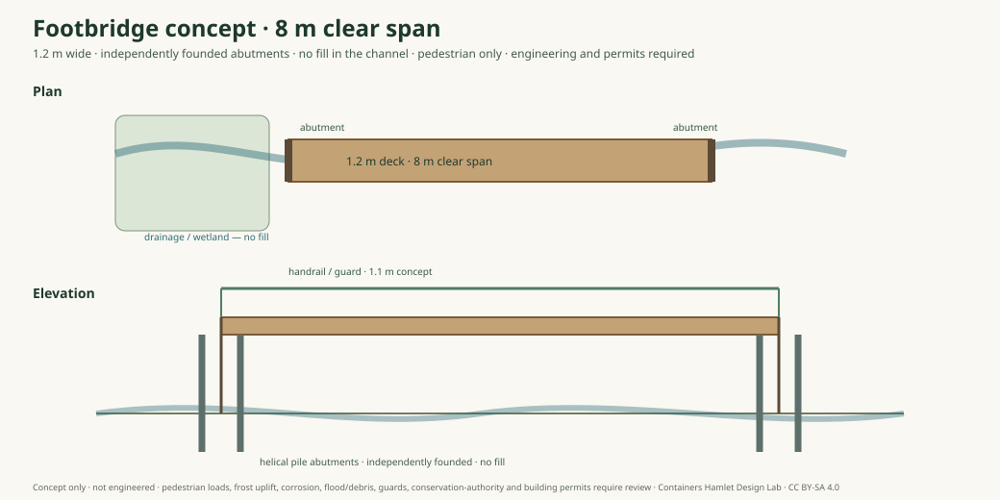

Ground and access
Foundations that sit lightly, and a small bridge
The houses are elevated on point foundations instead of a poured slab. The default is engineered helical piles with adjustable brackets and an independent deck. Ground screws, concrete piers, timber posts on pads and bedrock anchors are alternatives with different limits. The design intent is no fill, no slab and no compaction; that still needs a geotechnical investigation, an arborist-reviewed construction plan and permits.
Concept only. No foundation or bridge here is engineered, code-compliant or permit-ready. Supplier pages describe products and claims; they are not independent test reports or a review of this site.
Ontario-appropriate options
| Option | Best use | Ontario considerations | Evidence status |
|---|---|---|---|
| Engineered helical piles | Primary house, deck, boardwalk and bridge abutments | Geotechnical review, torque/installation records, frost uplift, corrosion, lateral capacity, slope stability, building permit; can be installed with small equipment and removed. | Established foundation practice; supplier claims about environmental benefits need independent verification. Techno Metal Post. |
| Ground screws | Light decks, boardwalks, small bridge abutments, signs | Smaller equipment and disturbance; lower capacity. A house needs an engineered primary foundation, not a generic ground-screw kit. | Supplier/product claims; engineering required. Treat as a light-structure option. |
| Concrete piers / sonotubes | Point foundations where concrete is preferred | Still concrete, excavation and frost-depth design; smaller footprint than a slab but not concrete-free. Confirm bearing, uplift and reinforcement. | Conventional practice; no claim of low carbon. |
| Timber posts on pads | Decks, porches, boardwalk, temporary structures | Rot, uplift, bearing and frost heave; not a primary house foundation in Ontario without engineering. | Conventional light-frame detail; site-specific. |
| Bedrock anchors / pins | Shallow, sound bedrock | Requires geotechnical confirmation of bedrock continuity and anchor capacity; corrosion and waterproofing details. | Engineering-led; not a generic DIY option. |
A rubble trench, tyre foundation or “no foundation” approach can be appropriate in some natural-building contexts, but it is not presented here as an Ontario house foundation without geotechnical and code review. See the Natural Building Collective overview as experience/opinion, not an Ontario code approval.
What “not compacted” means
- Point loads, not a slab. Piles or piers carry the house at discrete locations; the ground between them stays undisturbed.
- No fill and no grade change. Do not raise the building pad with imported fill or cut into the slope without an engineered design.
- Root protection. Fence the root-protection zone, use matting for access, avoid parking and stockpiles under trees, and have an arborist review the sequence.
- Water. Keep runoff away from piles and excavations; silt fencing and erosion control are required near slopes and wetlands.
- Elevation. A 0.6 m default clearance gives ventilation, inspection and snow/water separation; confirm with the foundation and envelope designers.
- Independent decks and porches. Separate structures can move with frost and be repaired without loading the container frame.
These are design intentions, not a prescription. Ontario building permits, the Ontario Building Code, conservation-authority regulations, tree bylaws, species-at-risk rules and local site-plan requirements may all apply.
A small footbridge to the remote part of the land
A pedestrian bridge should span the drainage or wet ground rather than fill it. The concept is a 1.2 m wide, 8 m clear-span timber footbridge on two independently founded abutments, with helical piles or engineered ground screws outside the channel. It is not a road bridge and is not designed for vehicles.

- Span the channel. Keep abutments outside the ordinary high-water line and the root-protection zones where possible.
- Independent abutments. Helical piles or engineered ground screws; no concrete fill in the watercourse.
- Pedestrian design. Confirm deck width, guards, slip resistance, lighting if needed, and accessibility with the actual users.
- Flood and debris. Check scour, debris loading, freeboard and safe shutdown/removal.
- Permits. A conservation authority, Fisheries Act review, species-at-risk check and building permit may be required. Do not build in or near water without advice.
- Material. Durable, repairable timber or steel deck with galvanized or stainless connections; confirm fire, rot and maintenance.
Foundation settings in the concepts
| Design | System | Clearance | Ground | Deck |
|---|---|---|---|---|
| Woodland Retreat | helical-piles | 0.6 m | No fill / no compaction intent | Independent |
| Micro Studio | helical-piles | 0.6 m | No fill / no compaction intent | Independent |
| Lakeside Hideaway | helical-piles | 0.6 m | No fill / no compaction intent | Independent |
| Forest Courtyard | helical-piles | 0.6 m | No fill / no compaction intent | Independent |
| L-Shaped Haven | helical-piles | 0.6 m | No fill / no compaction intent | Independent |
| Open Plan | helical-piles | 0.6 m | No fill / no compaction intent | Independent |
| Woodland Courtyard | helical-piles | 0.6 m | No fill / no compaction intent | Independent |
| Family Lodge | helical-piles | 0.6 m | No fill / no compaction intent | Independent |
| Gathering House | helical-piles | 0.6 m | No fill / no compaction intent | Independent |
| Common Lodge | helical-piles | 0.6 m | No fill / no compaction intent | Independent |
Sources and evidence
- Wildlife and Countryside Link — pylon projects and nature (UK policy article; useful on routing and smaller ground footprints, not evidence for a house foundation).
- Techno Metal Post — environmental benefits of helical piles (supplier claims: reduced concrete, minimal disturbance, reuse; not independently verified).
- Natural Building Collective — foundation approaches (practitioner experience/opinion; hard, soft, mixed and clay ground; not an Ontario code approval).
- Solid Earth Technologies — boardwalk and bridge helical piers (supplier; wetland boardwalk/bridge examples and claims).
- Houzz — a house that sits lightly on the earth (design article/inspiration, not engineering).
- Ontario Building Code, O. Reg. 332/12 (legal framework; foundation design still needs professional review).
- Conservation Ontario (conservation-authority permitting; check the local authority).
No supplier diagram, photograph or product design is copied. The foundation and bridge diagrams on this page are original schematics. Supplier claims are not independent test results. A geotechnical engineer, structural engineer, building official, conservation authority and arborist should review the actual site before construction.